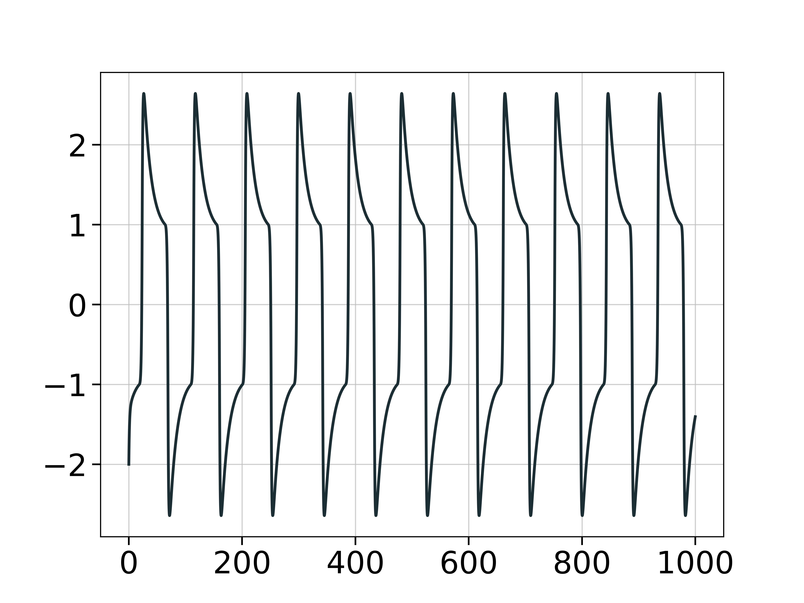

Periodicity & Ergodicity
In this page we describe methods related to the periodic behavior of dynamical systems or univariate timeseries, or related to the ergodic property of chaotic sets.
Stable and Unstable Periodic Orbits of Maps
Chaotic behavior of low dimensional dynamical systems is affected by the position and the stability properties of the periodic orbits of a dynamical system.
Finding unstable (or stable) periodic orbits of a discrete mapping analytically rapidly becomes impossible for higher orders of fixed points. Fortunately there is a numeric algorithm due to Schmelcher & Diakonos which allows such a computation. Notice that even though the algorithm can find stable fixed points, it is mainly aimed at unstable ones.
The functions periodicorbits and lambdamatrix implement the algorithm:
ChaosTools.periodicorbits — Functionperiodicorbits(ds::DiscreteDynamicalSystem,
o, ics [, λs, indss, singss]; kwargs...) -> FPFind fixed points FP of order o for the map ds using the algorithm due to Schmelcher & Diakonos[Schmelcher1997]. ics is a collection of initial conditions (container of vectors) to be evolved.
Optional Arguments
The optional arguments λs, indss, singss must be containers of appropriate values, besides λs which can also be a number. The elements of those containers are passed to: lambdamatrix(λ, inds, sings), which creates the appropriate $\mathbf{\Lambda}_k$ matrix. If these arguments are not given, a random permutation will be chosen for them, with λ=0.001.
Keyword Arguments
maxiters::Int = 100000: Maximum amount of iterations an i.c. will be iterated before claiming it has not converged.disttol = 1e-10: Distance tolerance. If the 2-norm of a previous state with the next one is≤ disttolthen it has converged to a fixed point.inftol = 10.0: If a state reachesnorm(state) ≥ inftolit is assumed that it has escaped to infinity (and is thus abandoned).roundtol::Int = 4: The found fixed points are rounded toroundtoldigits before pushed into the list of returned fixed pointsFP, if they are not already contained inFP. This is done so thatFPdoesn't contain duplicate fixed points (notice that this has nothing to do withdisttol). Turn this totypemax(Int)to get the full precision of the algorithm.
Description
The algorithm used can detect periodic orbits by turning fixed points of the original map ds to stable ones, through the transformation
\[\mathbf{x}_{n+1} = \mathbf{x}_n + \mathbf{\Lambda}_k\left(f^{(o)}(\mathbf{x}_n) - \mathbf{x}_n\right)\]
with $f$ = eom. The index $k$ counts the various possible $\mathbf{\Lambda}_k$.
Performance Notes
All initial conditions are evolved for all $\mathbf{\Lambda}_k$ which can very quickly lead to long computation times.
ChaosTools.lambdamatrix — Functionlambdamatrix(λ, inds::Vector{Int}, sings) -> ΛkReturn the matrix $\mathbf{\Lambda}_k$ used to create a new dynamical system with some unstable fixed points turned to stable in the function periodicorbits.
Arguments
λ<:Real: the multiplier of the $C_k$ matrix, with0<λ<1.inds::Vector{Int}: Theith entry of this vector gives the row of the nonzero element of theith column of $C_k$.sings::Vector{<:Real}: The element of theith column of $C_k$ is +1 ifsigns[i] > 0and -1 otherwise (singscan also beBoolvector).
Calling lambdamatrix(λ, D::Int) creates a random $\mathbf{\Lambda}_k$ by randomly generating an inds and a signs from all possible combinations. The collections of all these combinations can be obtained from the function lambdaperms.
Description
Each element of inds must be unique such that the resulting matrix is orthogonal and represents the group of special reflections and permutations.
Deciding the appropriate values for λ, inds, sings is not trivial. However, in ref.[Pingel2000] there is a lot of information that can help with that decision. Also, by appropriately choosing various values for λ, one can sort periodic orbits from e.g. least unstable to most unstable, see[Diakonos1998] for details.
ChaosTools.lambdaperms — Functionlambdaperms(D) -> indperms, singpermsReturn two collections that each contain all possible combinations of indices (total of $D!$) and signs (total of $2^D$) for dimension D (see lambdamatrix).
Standard Map example
For example, let's find the fixed points of the Systems.standardmap of order 2, 3, 4, 5, 6 and 8. We will use all permutations for the signs but only one for the inds. We will also only use one λ value, and a 21×21 density of initial conditions.
First, initialize everything
using DynamicalSystems, PyPlot, StaticArrays
ds = Systems.standardmap()
xs = range(0, stop = 2π, length = 21); ys = copy(xs)
ics = [SVector{2}(x,y) for x in xs for y in ys]
# All permutations of [±1, ±1]:
singss = lambdaperms(2)[2] # second entry are the signs
# I know from personal research I only need this `inds`:
indss = [[1,2]] # <- must be container of vectors!!!
λs = 0.005 # <- only this allowed to not be vector (could also be vector)
orders = [2, 3, 4, 5, 6, 8]
ALLFP = Dataset{2, Float64}[];Dataset{2, Float64}[]Then, do the necessary computations for all orders
for o in orders
FP = periodicorbits(ds, o, ics, λs, indss, singss)
push!(ALLFP, FP)
endPlot the phase space of the standard map
iters = 1000
dataset = trajectory(ds, iters)
for x in xs
for y in ys
append!(dataset, trajectory(ds, iters, SVector{2}(x, y)))
end
end
figure(figsize = (12,12))
m = Matrix(dataset)
PyPlot.scatter(view(m, :, 1), view(m, :, 2), s= 1, color = "black")
PyPlot.xlim(xs[1], xs[end])
PyPlot.ylim(ys[1], ys[end]);(0.0, 6.283185307179586)
and finally, plot the fixed points
markers = ["D", "^", "s", "p", "h", "8"]
colors = ["b", "g", "r", "c", "m", "grey"]
for i in 1:6
FP = ALLFP[i]
o = orders[i]
PyPlot.plot(columns(FP)...,
marker=markers[i], color = colors[i], markersize=10.0 + (8-o), linewidth=0.0,
label = "order $o", markeredgecolor = "yellow", markeredgewidth = 0.5)
end
legend(loc="upper right", framealpha=0.9)
xlabel("\$\\theta\$")
ylabel("\$p\$")
You can confirm for yourself that this is correct, for many reasons:
- It is the same fig. 12 of this publication.
- Fixed points of order $n$ are also fixed points of order $2n, 3n, 4n, ...$
- Besides fixed points of previous orders, original fixed points of order $n$ come in (possible multiples of) $2n$-sized pairs (see e.g. order 5). This is a direct consequence of the Poincaré–Birkhoff theorem.
Estimating the Period
The function estimate_period from ChaosTools offers ways for estimating the period (either exact for periodic timeseries, or approximate for near-periodic ones) of a given timeseries. We offer five methods to estimate periods, some of which work on evenly sampled data only, and others which accept any data. The figure below summarizes this: 
ChaosTools.estimate_period — Functionestimate_period(v::Vector, method, t=0:length(v)-1; kwargs...)Estimate the period of the signal v, with accompanying time vector t, using the given method.
If t is an AbstractArray, then it is iterated through to ensure that it's evenly sampled (if necessary for the algorithm). To avoid this, you can pass any AbstractRange, like a UnitRange or a LinRange, which are defined to be evenly sampled.
Methods requiring evenly sampled data
These methods are faster, but some are error-prone.
:periodogramor:pg: Use the fast Fourier transform to compute a periodogram (power-spectrum) of the given data. Data must be evenly sampled.:multitaperormt: The multitaper method reduces estimation bias by using multiple independent estimates from the same sample. Data tapers are then windowed and the power spectra are obtained. Available keywords follow:nwis the time-bandwidth product, andntapersis the number of tapers. Ifwindowis not specified, the signal is tapered withntapersdiscrete prolate spheroidal sequences with time-bandwidth productnw. Each sequence is equally weighted; adaptive multitaper is not (yet) supported. Ifwindowis specified, each column is applied as a taper. The sum of periodograms is normalized by the total sum of squares ofwindow.:autocorrelationor:ac: Use the autocorrelation function (AC). The value where the AC first comes back close to 1 is the period of the signal. The keywordL = length(v)÷10denotes the length of the AC (thus, given the default setting, this method will fail if there less than 10 periods in the signal). The keywordϵ = 0.2(\epsilon) means that1-ϵcounts as "1" for the AC.
Methods not requiring evenly sampled data
These methods tend to be slow, but versatile and low-error.
:lombscargleor:ls: Use the Lomb-Scargle algorithm to compute a periodogram. The advantage of the Lomb-Scargle method is that it does not require an equally sampled dataset and performs well on undersampled datasets. Constraints have been set on the period, since Lomb-Scargle tends to have false peaks at very low frequencies. That being said, it's a very flexible method. It is extremely customizable, and the keyword arguments that can be passed to it are given in the documentation.:zerocrossingor:zc: Find the zero crossings of the data, and use the average difference between zero crossings as the period. This is a naïve implementation, with only linear interpolation; however, it's useful as a sanity check. The keywordlinecontrols where the "crossing point" is. It deffaults tomean(v).
For more information on the periodogram methods, see the documentation of DSP.jl and LombScargle.jl.
Example
Here we will use a modified FitzHugh-Nagumo system that results in periodic behavior, and then try to estimate its period. First, let's see the trajectory:
using DynamicalSystems, PyPlot
function FHN(u, p, t)
e, b, g = p
v, w = u
dv = min(max(-2 - v, v), 2 - v) - w
dw = e*(v - g*w + b)
return SVector(dv, dw)
end
g, e, b = 0.8, 0.04, 0.0
p0 = [e, b, g]
fhn = ContinuousDynamicalSystem(FHN, SVector(-2, -0.6667), p0)
T, dt = 1000.0, 0.1
v = trajectory(fhn, T; dt = dt)[:, 1]
t = 0:dt:T
figure()
plot(0:dt:T, v)
Examining the figure, one can see that the period of the system is around 91 time units. To estimate it numerically let's use some of the methods:
estimate_period(v, :autocorrelation, t)91.0
estimate_period(v, :periodogram, t)91.62720091627202
estimate_period(v, :zerocrossing, t)91.08000000000001
Return time statistics
ChaosTools.mean_return_times — Functionmean_return_times(ds::DynamicalSystem, u₀, εs, T; kwargs...) → τ, cReturn the mean return times to subsets of the state space of ds defined by u₀, εs as well as the amount of returns c for each subset. The ds is evolved for a maximum of T time. This function behaves similarly to exit_entry_times and thus see that one for the meaning of u₀ and εs.
This function supports both discrete and continuous systems, however the optimizations done in discrete systems (where all nested ε-sets are checked at the same time), are not done here yet, which leads to disproportionally lower performance since each ε-related set is checked individually from start.
Continuous systems allow for the following keywords:
i=10How many points to interpolate the trajectory in-between steps to find candidate crossing regions.m=10.0A multiplier. If the trajectory is at leastm*εdistance away fromu0, the algorithm that checks for crossings of theε-set is not initiated.
For continuous systems T, i, m can be vectors with same size as εs, to help increase accuracy of small ε.
ChaosTools.exit_entry_times — Functionexit_entry_times(dds, u₀, εs, T) → exits, entriesCollect exit and entry times for a ball/box centered at u₀ with radii εs (see below), in the state space of the given discrete dynamical system (function not yet available for continuous systems). Return the exit and (re-)entry return times to the set(s), where each of these is a vector containing all collected times for the respective ε-radius set, for ε ∈ εs.
Use transit_return(exits, entries) to transform the output into transit and return times, and see also mean_return_times for both continuous and discrete systems.
Description
Transit time statistics are important for the transport properties of dynamical systems[Meiss1997] and can even be connected with the fractal dimension of chaotic sets[Boev2014].
The current algorithm collects exit and re-entry times to given sets in the state space, which are centered at u₀ (algorithm always starts at u₀ and the initial state of ds is irrelevant). εs is always a Vector.
The sets around u₀ are nested hyper-spheres of radius ε ∈ εs, if each entry of εs is a real number. The sets can also be hyper-rectangles (boxes), if each entry of εs is a vector itself. Then, the i-th box is defined by the space covered by u0 .± εs[i] (thus the actual box size is 2εs[i]!).
The reason to input multiple εs at once is purely for performance.
For discrete systems, exit time is recorded immediatelly after exitting of the set, and re-entry is recorded immediatelly on re-entry. This means that if an orbit needs 1 step to leave the set and then it re-enters immediatelly on the next step, the return time is 1. For continuous systems high-order interpolation is done to accurately record the time of exactly crossing the ε-ball/box.
- Schmelcher1997P. Schmelcher & F. K. Diakonos, Phys. Rev. Lett. 78, pp 4733 (1997)
- Pingel2000D. Pingel et al., Phys. Rev. E 62, pp 2119 (2000)
- Diakonos1998F. K. Diakonos et al., Phys. Rev. Lett. 81, pp 4349 (1998)
- Meiss1997Meiss, J. D. Average exit time for volume-preserving maps, Chaos (1997)](https://doi.org/10.1063/1.166245)
- Boev2014Boev, Vadivasova, & Anishchenko, Poincaré recurrence statistics as an indicator of chaos synchronization, Chaos (2014)](https://doi.org/10.1063/1.4873721)